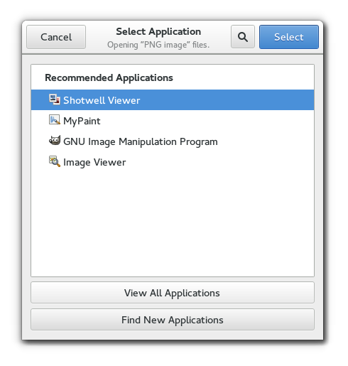

Gtk.AppChooserDialog
Example
Methods
| Inherited: | Gtk.Dialog (14), Gtk.Window (117), Gtk.Bin (1), Gtk.Container (27), Gtk.Widget (256), GObject.Object (33), Gtk.Buildable (10), Gtk.AppChooser (3) |
|---|
| static | new(parent, flags, file) |
| static | new_for_content_type(parent, flags, content_type) |
| get_heading() | |
| get_widget() | |
| set_heading(heading) |
Virtual Methods
| Inherited: | Gtk.Dialog (2), Gtk.Window (5), Gtk.Container (10), Gtk.Widget (82), GObject.Object (7), Gtk.Buildable (10) |
|---|
Properties
| Inherited: | Gtk.Dialog (1), Gtk.Window (33), Gtk.Container (3), Gtk.Widget (38), Gtk.AppChooser (1) |
|---|
| Name | Type | Flags | Short Description |
|---|---|---|---|
| gfile | Gio.File | r/w | The Gio.File used by the app chooser dialog |
| heading | str | r/w | The text to show at the top of the dialog |
Style Properties
| Inherited: | Gtk.Dialog (4), Gtk.Window (2), Gtk.Widget (17) |
|---|
Signals
| Inherited: | Gtk.Dialog (2), Gtk.Window (5), Gtk.Container (4), Gtk.Widget (69), GObject.Object (1) |
|---|
Fields
| Inherited: | Gtk.Dialog (1), Gtk.Window (1), Gtk.Bin (1), Gtk.Container (1), Gtk.Widget (1), GObject.InitiallyUnowned (3), GObject.Object (3) |
|---|
| Name | Type | Access | Description |
|---|---|---|---|
| parent | Gtk.Dialog | r |
Class Details
- class Gtk.AppChooserDialog(title=None, parent=None, flags=0, buttons=None, _buttons_property=None, **kwds)
Bases: Gtk.Dialog, Gtk.AppChooser
Gtk.AppChooserDialog shows a Gtk.AppChooserWidget inside a Gtk.Dialog.
Note that Gtk.AppChooserDialog does not have any interesting methods of its own. Instead, you should get the embedded Gtk.AppChooserWidget using Gtk.AppChooserDialog.get_widget () and call its methods if the generic Gtk.AppChooser interface is not sufficient for your needs.
To set the heading that is shown above the Gtk.AppChooserWidget, use Gtk.AppChooserDialog.set_heading ().
- static new(parent, flags, file)
Parameters: - parent (Gtk.Window or None) – a Gtk.Window, or None
- flags (Gtk.DialogFlags) – flags for this dialog
- file (Gio.File) – a Gio.File
Returns: a newly created Gtk.AppChooserDialog
Return type: Creates a new Gtk.AppChooserDialog for the provided Gio.File, to allow the user to select an application for it.
New in version 3.0.
- static new_for_content_type(parent, flags, content_type)
Parameters: - parent (Gtk.Window or None) – a Gtk.Window, or None
- flags (Gtk.DialogFlags) – flags for this dialog
- content_type (str) – a content type string
Returns: a newly created Gtk.AppChooserDialog
Return type: Creates a new Gtk.AppChooserDialog for the provided content type, to allow the user to select an application for it.
New in version 3.0.
- get_heading()
Returns: the text to display at the top of the dialog, or None, in which case a default text is displayed Return type: str Returns the text to display at the top of the dialog.
- get_widget()
Returns: the Gtk.AppChooserWidget of self Return type: Gtk.Widget Returns the Gtk.AppChooserWidget of this dialog.
New in version 3.0.
- set_heading(heading)
Parameters: heading (str) – a string containing Pango markup Sets the text to display at the top of the dialog. If the heading is not set, the dialog displays a default text.
Property Details
- Gtk.AppChooserDialog.props.gfile
Name: gfile Type: Gio.File Default Value: None Flags: r/w The Gio.File used by the Gtk.AppChooserDialog. The dialog’s Gtk.AppChooserWidget content type will be guessed from the file, if present.